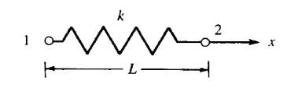

Materyel Mekaniği - 2
Direk Direngenlik Metotu (Direct Stiffness Method)
Direngenlik metotunu anlamak için direngenlik matrisi kavramını işlemek gerekir. Bu konuya biraz [5]'de değindik. Bir öğe grubunun, sistemin direngenlik matrisi düğümsel yer değişimler $d$ ile düğümsel kuvvetler $F$'yi ilintilendiren bir $K$ matrisidir, öyle ki [4, sf. 34]
$$ F = K d $$
eşitliği geçerlidir. Alttaki gibi bir sistem olsun,

Sistemde bir yay görülüyor, bu yay üzerinde iki tane düğüm noktası seçtik, onları takip edeceğiz, düğüm 1 ve 2. Düğümlerdeki yer değişimler $u_1,u_2$ olsun, yaydaki toplam değişim $\delta = u_1 - u_2$. Uygulanan kuvvet $T$ ise bir sabit $k$ üzerinden $T = k \delta$ eşitliği ortaya atılabilir.
Direngenlik matrisine gelirsek, sistemdeki tüm yer değişimleri şöyle gösterebiliriz,

Sağ uçta yay $T$ kuvveti ile çekiliyorsa, bu durum sol uçta $-T$ tepkisel kuvvete sebep olur. Ayrıca $u_1$'in sol yönü işaret ettiğine dikkat, çünkü yer değişimin yönü pozitif yönün tersinde, yaydaki takip edilen nokta başlangıç anının sol tarafında kalıyor, bu sebeple yön eksi.
$$ f_{1x} = -T, \quad f_{2x} = T $$
Hepsini bir araya koyarsak
$$ T = -f_{1x} = k (u_2 - u_1) $$
$$ T = f_{2x} = k (u_2 - u_1) $$
Yani
$$ f_{1x} = k(u_1 - u_2) $$
$$ f_{2x} = k(u_2 - u_1) $$
Matris formunu kullanarak,
$$ \left[\begin{array}{ccc} f_{1x} \\ f_{2x} \end{array}\right] = \left[\begin{array}{ccc} k & -k \\ -k & k \end{array}\right] \left[\begin{array}{ccc} u_1 \\ u_2 \end{array}\right] $$
İfadenin ortasındaki 2 x 2 matrisi direngenlik matrisidir.
Üstdüşüm (Superposition)
Eğer iki tane yay sistemini birbiriyle bağlı olarak işlemek istersek [4, sf. 38], üstdüşüm tekniği kullanılabilir. Üstdüşüm basit bir matris toplamı ile yapılabiliyor. Alttaki örneğe bakalım,

İki yay var, birbirlerine bağlılar, iki yayın sabitleri $k_1$, $k_2$ olsun. Her iki yayın direngenlik matrisi ayrı ayrı (tekabül eden yer değişim değişkenleri matris kolon etiketi olarak gösteriliyor),
$$ k^{(1)} = \begin{array}{cc} & \begin{array}{cc} u_1 & u_3 \end{array} \\ & \left[ \begin{array}{cc} k_1 & -k_1 \\ -k_1 & k_1 \end{array} \right] \end{array} \qquad k^{(2)} = \begin{array}{cc} & \begin{array}{cc} u_3 & u_2 \end{array} \\ & \left[ \begin{array}{cc} k_2 & -k_2 \\ -k_2 & k_2 \end{array} \right] \end{array} $$
İki yay sistemini tek sistem haline getirmek aslında basit bir matris toplamından ibaret fakat bu matrisin kolonları aynı değişkenlere tekabül ediyor olmalı. O zaman her iki 2 x 2 matrisi genişletip 3 x 3 matrisi haline getirirsek, değişken etiketlerini eşitlersek bu yeni iki matrisi toplayabiliriz.
$$ k^{(1)} = \begin{array}{cc} & \begin{array}{ccc} u_1 & u_2 & u_3 \end{array} \\ & \left[ \begin{array}{ccc} k_1 & 0 & -k_1 \\ 0 & 0 & 0 \\ -k_1 & 0 & k_1 \end{array} \right] \end{array} \qquad k^{(2)} = \begin{array}{cc} & \begin{array}{ccc} u_1 & u_2 & u_3 \end{array} \\ & \left[ \begin{array}{ccc} 0 & 0 & 0 \\ 0 & k_2 & -k_2 \\ 0 & -k_2 & k_2 \end{array} \right] \end{array} \qquad $$
Dikkat edilirse mesela ilk matrisin $u_2$ kolonu tamamen sıfır çünkü 2 x 2 halindeki $k^{(1)}$ matrisinde bu değişken yoktu. Yeni genişletilmiş matrise geçerken olmayan değişkenin kolonunu sıfırlarsak aslında aynı matrisi elde etmiş oluruz.
Artık iki matrisi toplayabiliriz,
$$ \left[\begin{array}{ccc} k_1 & 0 & -k_1 \\ 0 & k_2 & -k_2 \\ -k_1 & -k_2 & k_1+k_2 \end{array}\right] \left[\begin{array}{c} u_1 \\ u_2 \\ u_3 \end{array}\right] = \left[\begin{array}{c} F_{1x} \\ F_{2x} \\ F_{3x} \end{array}\right] $$
Sınır Şartları (Boundary Conditions)
Resimde gösterilen örnekte sol tarafın duvara sabitlendiğini görüyoruz. Sabitlenme demek notasyonumuz itibariyle $u_1 = 0$ demektir. Bu bir sınır şartıdır, onu bir şekilde sistemimize dahil etmemiz gerekir. Değeri üstteki sistemde yerine koyarsak,
$$ \left[\begin{array}{ccc} k_1 & 0 & -k_1 \\ 0 & k_2 & -k_2 \\ -k_1 & -k_2 & k_1+k_2 \end{array}\right] \left[\begin{array}{c} 0 \\ u_2 \\ u_3 \end{array}\right] = \left[\begin{array}{c} F_{1x} \\ F_{2x} \\ F_{3x} \end{array}\right] $$
Matris sistemini cebirsel olarak tekrar açarsak,
$$ k_1(0) + (0) u_2 - k_1 u_3 = F_{1x} $$
$$ 0(0) + k_2 u_2 - k_2 u_3 = F_{2x} $$
$$ -k_1 (0) - k_2 u_2 + (k_1+k_2) u_3 = F_{3x} $$
elde edilir. Bu sistemde sadece ikinci ve üçüncü denklemi matris olarak yazabiliriz,
$$ \left[\begin{array}{cc} k_2 & -k_2 \\ -k_2 & k_1 + k_2 \end{array}\right] \left[\begin{array}{c} u_1 \\ u_2 \end{array}\right] = \left[\begin{array}{c} F_{2x} \\ F_{3x} \end{array}\right] $$
Bu son matrisi elde etmek için bir anlamda önceki matrisin birinci satırı ve kolonunu dışarı attık, kenara ayırdık, ve kalanlarla yeni bir sistem yarattık. Fakat dikkat bu $F_{1x}$ sıfır demek değildir, onun hala bir ifadesi var, $F_{1x} = -k_1 u_3$, ve bu eşitliği bir kez sistemin geri kalanının çözdükten sonra dönüp ayrıca bulmamız gerekiyor.
Devam edelim, yeni sistemi çözersek,
$$ \left[\begin{array}{ccc} u_2 \\ u_3 \end{array}\right] = \left[\begin{array}{cc} k_2 & -k_2 \\ -k_2 & k_1 + k_2 \end{array}\right]^{-1} \left[\begin{array}{c} F_{2x} \\ F_{3x} \end{array}\right] $$
$$ = \left[\begin{array}{cc} \dfrac{1}{k_2} + \dfrac{1}{k_1} & \dfrac{1}{k_1} \\ \dfrac{1}{k_1} & \dfrac{1}{k_1} \end{array}\right] \left[\begin{array}{c} F_{2x} \\ F_{3x} \end{array}\right] $$
$u_2,u_3$ bir kez elde edildikten sonra $F_{1x} = -k_1 u_3$ formülü ile $F_{1x}$ elde edilebilir.
Euler-Bernoulli Kirişleri (Beams)

Mühendislikte, özellikle inşaat mühendisliğinde kirişler yaygın bilinen bir konudur. Bir kiriş bağlamında
- Kaykılma Kuvvet Fonksiyonu $V(X_1)$
- Bükülme Moment Fonksiyonu $M(X_1)$
- Saptırma (Deflection) Fonksiyonu $y(X_1)$
gibi kalemlerle ilgileniyor olabilirim. Bu kalemlerden ilk ikisi çok basittir. Üçüncü hesap kirişin "servis edebilir" olup olmadığını söyleyebilir mesela, ki insanlar bu kirişin üstünde yürüdüğünde oraya buraya savrulmasınlar (saptırma bu hesabı bize verebilir). İşte üstteki türden hesapları yapabilmek için Euler-Bernoulli kiriş faraziyesinden yola çıkmak yaygın bir yaklaşımdır. Bu önkabuller nelerdir?
- Deformasyonlar ufak: Bu doğal bir varsayım, inşaat mühendisliğinde mesela eğer ortada bir deprem yok ise çok büyük şekil değişiklikleri beklemeye gerek yok.
- Kiriş lineer elastik eşyönlü (isotropic) maddeden yapılmış: inşaat mühendisliğindeki çelik kirişlerin zaten böyle olduğu farz edilir.
- Poisson oranı etkileri yoksayılır.
- Düzlem bölümler düzlem kalır (plane sections remain plain). Boyu eninden çok daha fazla olan nesnelerde bu doğrudur, fakat daha ufak parçalarda varsayım tutmayabilir.
İç Kuvvetler - Kaykılma ve Bükülme Momenti

Kirişin ufak bir bölümüne odaklanıyoruz ve oradaki kuvvetleri listelemeye uğraşıyoruz. Üstte birinci resimdeki parçaya bakıyoruz, eksenler yatay $X_1$ dikey $X_2$, ve parça yatay $\mathrm{d} X_1$ genişliğinde, üzerinde dağıtık yük $q$ var. Unutmayalım bir parçayı kesip çıkartınca onun üzerindeki kuvvetler hayali olarak ortaya "saçılır", bu saçılma çekiş vektörleri kadar çetrefil değil muhakkak (çünkü önkabullerle pek çok şeyi burada basitleştirdik) ama üç tane temel kuvvet olduğunu biliyoruz.
Kuvvetlerden ilki üstteki resimde soldan birinci, normal kuvvet $N$. Bu kuvvet parçanın sol tarafında $N$, sağ tarafında $N$'deki ($X_1$'e göre) değişim çarpı $X_1$'deki değişim. Aynı parçayla ve resimle devam ediyoruz, soldan ikinci resimde kaykılma kuvveti $V$ var, aynı değişim matematiği orada da var, ve nihayet soldan üçüncü resimde bükülme momenti, benzer matematik.
Kuvvet denge denklemi yazarsak dikey yöndeki toplam kuvvetlerin sıfır olması gerekir, yatay aynı şekilde,
$$ \sum F_{X_2} = V - \left( V + \frac{\mathrm{d} V}{\mathrm{d} X_1} \mathrm{d} X_1 \right) + q \mathrm{d} X_1 = 0 $$
Not: Dağıtık yük $q$ birim uzunluğa düşen kuvvettir, $N/m$, bu sebeple $q$ bir uzunluk olan $\mathrm{d} X_1$ ile çarpılınca kuvvet elde edilir.
$V$'ler iptal olur, geriye kalanları tekrar düzenlersek
$$ \frac{\mathrm{d} V}{\mathrm{d} X_1} \mathrm{d} X_1 = q \mathrm{d} X_1 $$
Eşitliğin her iki tarafında $\mathrm{d} X_1$ var, onları da iptal edersek,
$$ q = \frac{\mathrm{d} V}{\mathrm{d} X_1} \qquad (3) $$
Böylece kirişin üzerindeki dağıtık yük ile aynı kiriş üzerindeki kaykılma kuvveti arasında bir ilişkiyi ortaya çıkarmış oldum.
Momentler için de benzer bir denge formülü ortaya çıkartabilirim. Moment hesabı için bir nokta seçilmeli, ufak parçanın sağ noktasını baz alıyorum (resimde işaretli),

Referans nokta gerekli çünkü hatırlarsak moment bir nokta etrafındaki döndürmeye bağlıdır, kuvvet dönüş çapına teğet olan kuvvettir. O zaman
$$ \sum M_{X_3} = -M + \left( M + \frac{\mathrm{d} M}{\mathrm{d} X_1} \mathrm{d} X_1 \right) - V \mathrm{d} X_1 - q \mathrm{d} X_1 \left( \frac{\mathrm{d} X_1}{2} \right) = 0 $$
Formüldeki $\mathrm{d} X_1 / 2$ nereden çıktı? Moment için bir kuvvet uygulama uzaklığı lazım, uzaklık için de tek bir noktayı seçmek gerekli; bu sebeple $q$'nun etki ettiği bölgedeki kuvveti tek bir noktaya yapılıyormuş gibi farzediyoruz, o bölgenin tam ortasına, yani $- \mathrm{d} X_1 / 2$ noktasına. Kuvvet büyüklüğü için o tüm alana etki eden kuvveti bulmak lazım, $q \mathrm{d} X_1$.
Devam edelim, $M$ terimleri iptal olur, kalanları tekrar düzenleriz,
$$ V \mathrm{d} X_1 + \frac{q}{2} \mathrm{d} X_1^2 = \frac{\mathrm{d} M}{\mathrm{d} X_1} \mathrm{d} X_1 $$
Eşitliğin her yerini $\mathrm{d} X_1$'e bölelim,
$$ V + \frac{q}{2} \mathrm{d} X_1 = \frac{\mathrm{d} M}{\mathrm{d} X_1} $$
$\mathrm{d} X_1 \to 0$ iken limiti alırsak, eşitliğin solundaki ikinci terim yokolur,
$$ V = \frac{\mathrm{d} M}{\mathrm{d} X_1} \qquad (4) $$
Böylece bir eşitlik daha elde ettim, kaykılma kuvveti $X_1$'e göre momentteki değişim oranına eşit. Bir önceki eşitlik yük ve kaykılma, bu eşitlik kaykılma ve moment arasında idi. Bu ilişkiler Statik (Statics) dersinden geliyor, onları bulmak kolaydı.
Kaynaklar
[1] Kim, Introduction to Non-linear Finite Element Analysis
[2] Petitt, Intro to the Finite Element Method, University of Alberta, https://www.youtube.com/watch?v=2iUnfPRk6Ro&list=PLLSzlda_AXa3yQEJAb5JcmsVDy9i9K_fi
[3] Adeeb, Introduction to Solid Mechanics, Online Book, https://engcourses-uofa.ca/books/introduction-to-solid-mechanics/
[4] Logan, A First Course in the Finite Element Method
[5] Bayramlı, Hesapsal Bilim, Ders 1-8
Yukarı